How Mosaic Works
Mosaic is a private recovery support app built to give people encouragement, reflection, reminders, and support in their own way. No pressure. No judgment. Just support.
It is not a medical, counselling, emergency, or treatment service. It is designed to sit beside real-world supports such as meetings, sponsors, counsellors, doctors, treatment centres, helplines, family, friends, and trusted contacts.
- New Days: count and recognise your recovery days.
- Today’s Thought: read a daily recovery reflection.
- Saved Quotes: keep words that mean something to you.
- Find a Meeting: access recovery meeting information.
- Hold the Line: return to support when things feel difficult.
- Journal: write privately and keep track of thoughts and feelings.
- Mood Check-In: notice how you are feeling without judgement.
- Support Contacts: keep important people and services close by.
- Support Directory: find recovery, crisis, housing, legal, and practical supports.
- Games: use small distractions, including “kill a craving”.
- Meditation: use quiet tools for calm, focus, and reflection.
- Reminders: set helpful prompts in your own way.
- Privacy: nothing is shared unless you choose to share it.
- Personalisation: Mosaic is being designed so parts of the app can feel like your own.
Privacy Comes First
Mosaic is being built around a strict privacy rule: nothing leaves your phone without your permission. Nothing is shared, sent, uploaded, or passed on unless you choose to do it.
You are in control of the app. Your recovery, your notes, your journal, your contacts, your reminders, your choices, and your personal information belong to you.
Mosaic is not being built to watch you, judge you, track you, or take control away from you. It is being built to support you privately, in your own way, and only on your terms.
New Days
The New Days counter helps you mark your recovery one day at a time. It is a simple reminder that every new day matters.
Once you enter your recovery start date, Mosaic automatically continues counting your New Days for you.
It will not stop counting unless you choose to change or reset it in Settings.
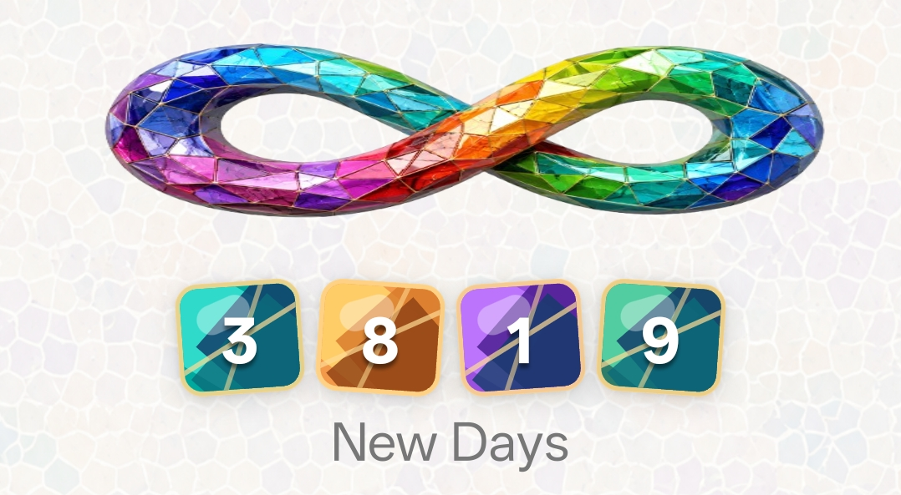
Today's Thought
Today's Thought gives you a short reflection or idea for the day.
It automatically changes to a new thought every day, giving you something fresh to reflect on each time you open the app.
The purpose is simple: a small daily thought that can encourage reflection, calm, or a different way of looking at the day.
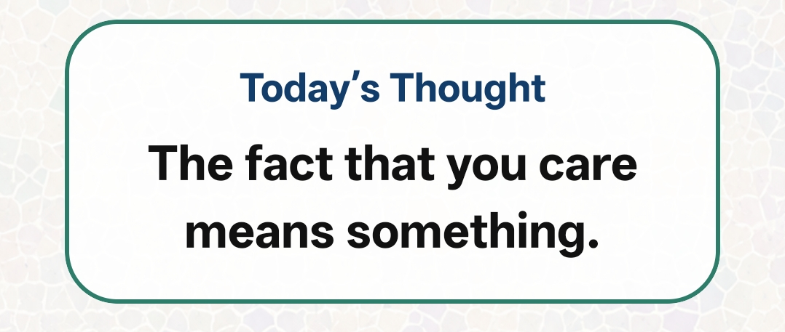
Find Your Local Meeting
Find Your Local Meeting helps you look for recovery meetings in your own area.
The aim is to make it easier to connect with real-world support when you need it, without having to search around in different places.
Back to home screen buttons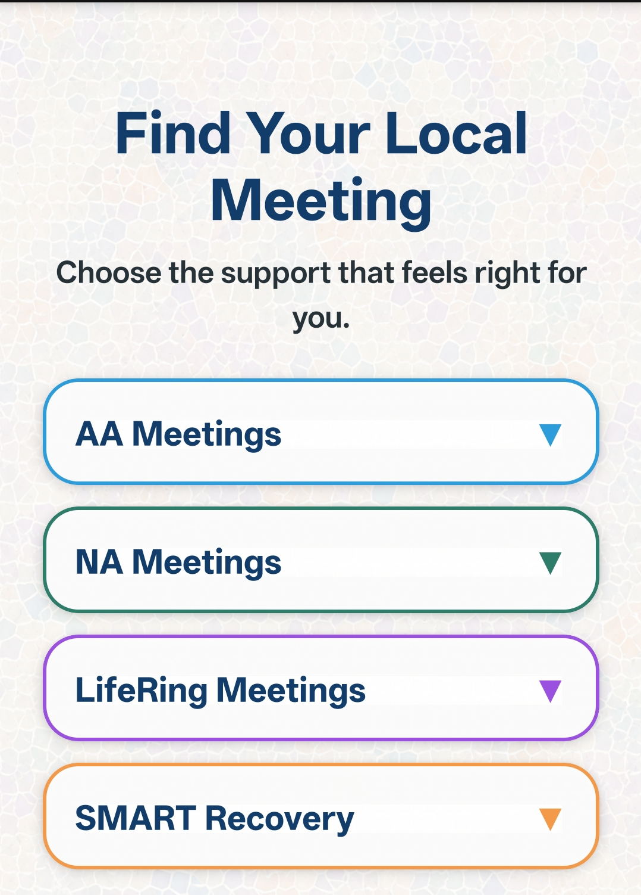
Online Meetings
Online Meetings helps you find recovery meetings that can be attended from home or another private space.
This can be useful when travelling, when transport is difficult, or when getting to a face-to-face meeting is not possible.
Back to home screen buttons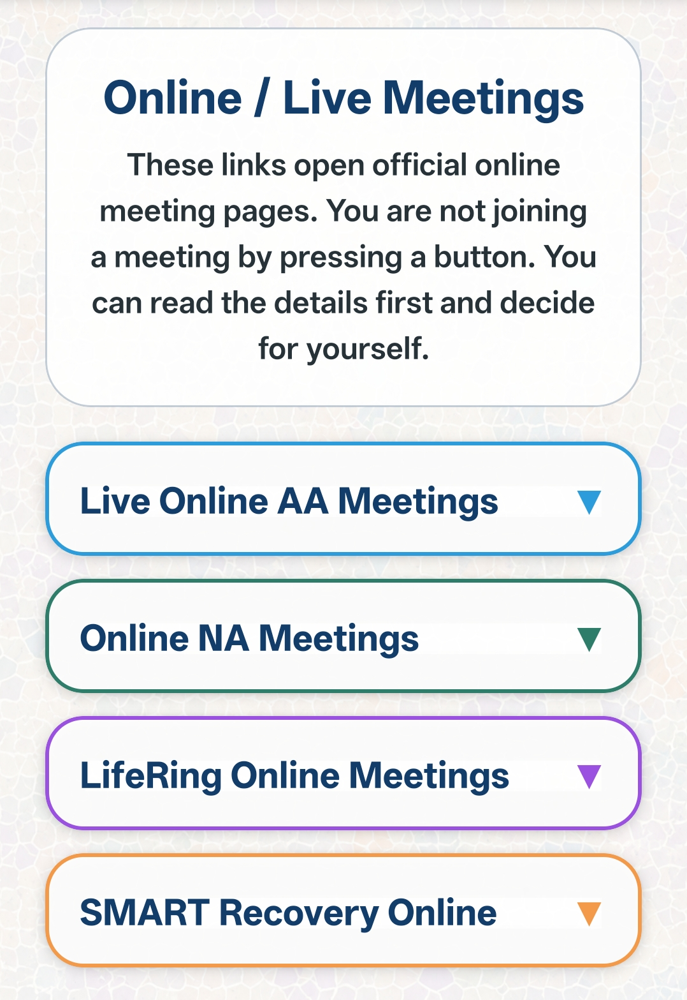
Special Interest Meetings
Special Interest Meetings helps you find meetings that may suit particular needs, backgrounds, or situations.
The purpose is to help people find support that feels more comfortable, relevant, and accessible to them.
Back to home screen buttons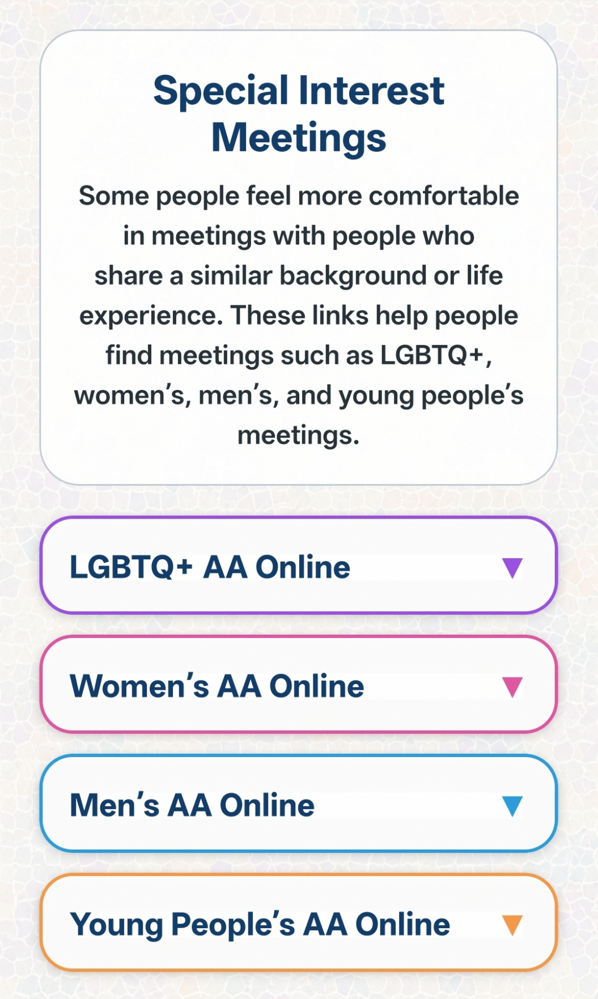
Language Meetings
Language Meetings helps people look for meetings available in different languages.
This is important because support should be easier to understand and access, especially for people who may feel more comfortable in another language.
Back to home screen buttons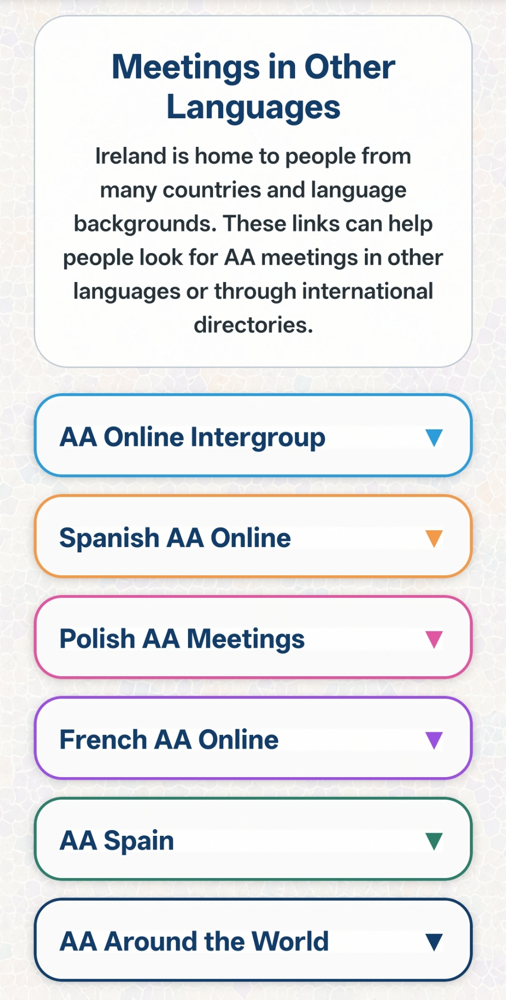
Quiet Moment
Quiet Moment gives you two ways to pause: a shared quiet moment with others, or a personal quiet moment for yourself.
Group Quiet Moment gives you a chance to join a shared moment and feel connected to other people. When you press Present, it simply adds you to the number of people present for that hour.
The number changes every hour, because different people may be present at different times.
Personal Quiet Moment is just for you. It gives you space to listen to a calming sound, take a pause, and settle yourself.
Back to home screen buttons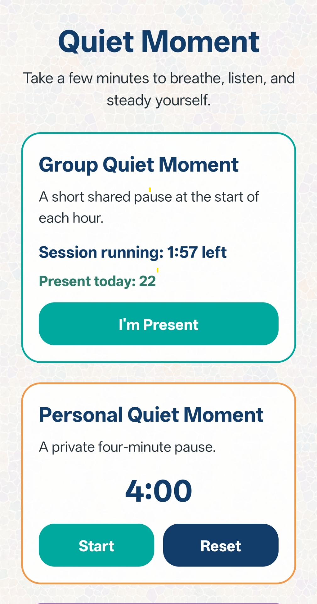
Free Sounds
Free Sounds gives the user a simple place to choose calming audio for meditation, breathing, or rest.
This section can include gentle background sounds such as rain, soft music, nature sounds, or peaceful tones. The aim is to help the user slow down, settle their thoughts, and take a quiet moment.
The Show Sounds button opens the available sound options. These sounds can be used during meditation, while resting, or when the user wants something calm in the background.
Any sounds used in Mosaic can be credited properly, with source and licence details shown where needed.
Back to home screen buttons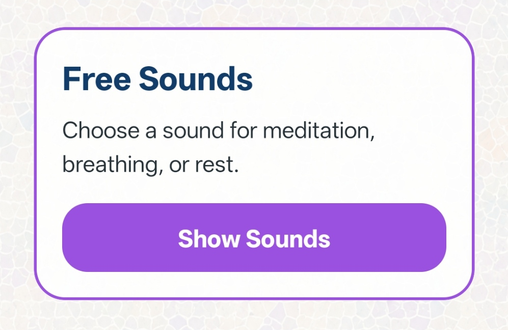
Give Me Something To Do
Give Me Something To Do is for moments when someone feels bored, restless, anxious, lonely, or stuck and wants one small action to help shift their focus.
Instead of giving a long list, Mosaic asks the user to make a few simple choices first. This helps the suggestion feel more personal and more manageable.
Back to home screen buttons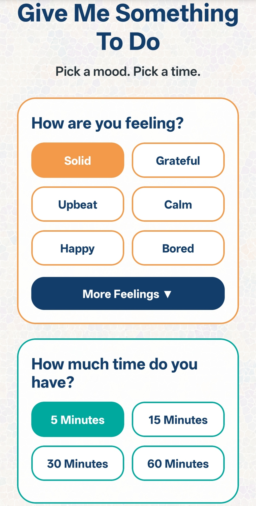
Choose Feeling, Time, and Challenge
The user can choose how they are feeling, such as bored, restless, lonely, anxious, or stressed. More feelings can be opened if the first options do not fit.
They can also choose how much time they have: 5 minutes, 15 minutes, 30 minutes, or 60 minutes. This means the app does not suggest something too big when the user only has a short moment.
The challenge level lets the user decide whether they want something easy or something a little more active.
Back to home screen buttonsChallenge Me Suggestion
After the user presses Challenge Me, Mosaic gives one clear suggestion based on the choices they made.
The aim is not to fix everything. The aim is to give the user one small positive action they can do now, instead of staying trapped in the same feeling.
If the suggestion does not suit the moment, the user can press Another Suggestion. If they want to understand why the suggestion was chosen, they can press Why This?
Back to home screen buttons
Reflections
Reflections gives the user a quiet place inside Mosaic for recovery thoughts, quotes, and short prompts.
Each day, Mosaic can show a new quote or reflection. The user can pause with it, think about it, or simply move on if it does not speak to them that day.
Mosaic does not tell the user what the quote should mean. The meaning belongs to the person reading it.
Back to home screen buttons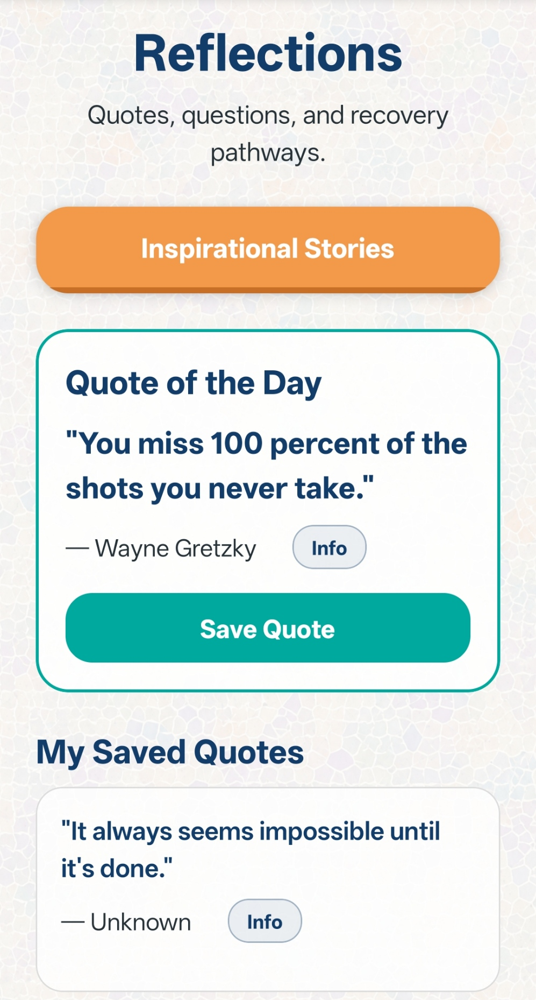
Saved Quotes
If a quote means something to the user, they can choose to save it.
Saved quotes stay visible below, creating a personal collection of words, thoughts, and reminders that the user can return to whenever they want.
Over time, this gives the user their own small recovery library, built from the quotes and reflections that mattered to them.
Back to home screen buttonsRecovery Pathways
Recovery Pathways continues from Reflections by giving the user more recovery-based options and guidance.
This section can help the user explore different parts of recovery at their own pace, without pressure and without being pushed in one single direction.
It supports the wider idea of Mosaic: private, non-judgemental support that the user can return to when they want it.
Back to home screen buttons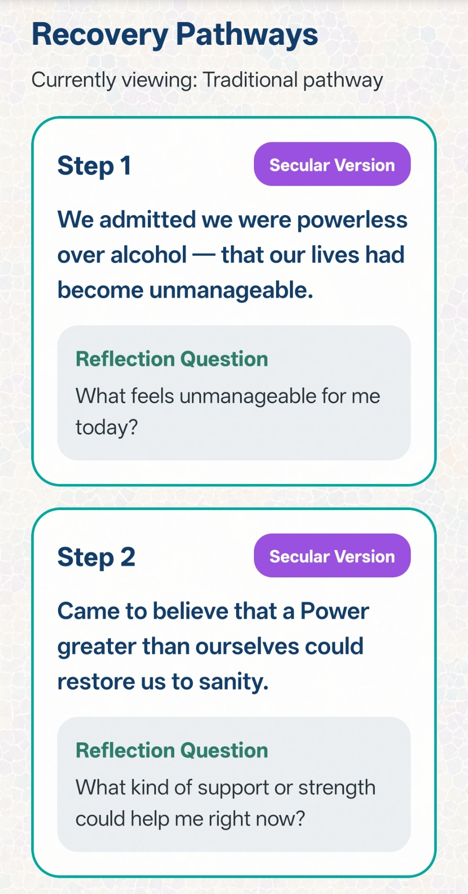
Hold the Line
Hold the Line is the fast-support area of Mosaic. It is for moments when someone needs to steady themselves quickly.
Emergency help stays first. If someone is in immediate danger or needs urgent medical help, the 999 and 112 buttons are clearly shown before anything else.
Below that, the user can quickly contact people they trust, such as a sponsor, trusted person, family member, partner, doctor, or counsellor.
Back to home screen buttons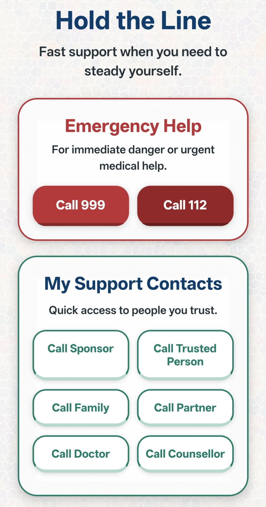
Ask Mosaic AI
Ask Mosaic AI gives the user another support option after emergency help and trusted contacts.
It can help the user find support, draft a message, prepare an email, or work out the next step when they are unsure what to do.
The user stays in control. Mosaic AI can help prepare words, but nothing is sent unless the user reads it first and chooses to send it.
Back to home screen buttons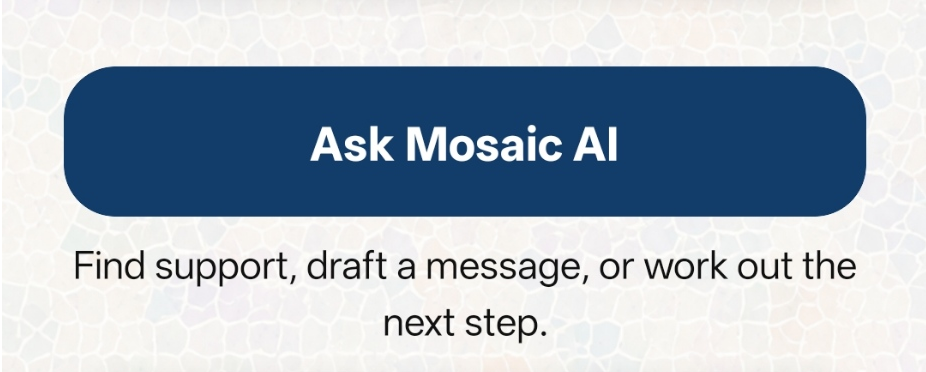
Support Sections
Support Sections give the user short, clear support options inside the app first.
These include recovery support, relapse prevention, mental health support, practical help, family and friends, and a safety plan.
The app keeps this part simple. Fuller information and source links can be placed on the website, so the app does not become too heavy or overwhelming.
Back to home screen buttons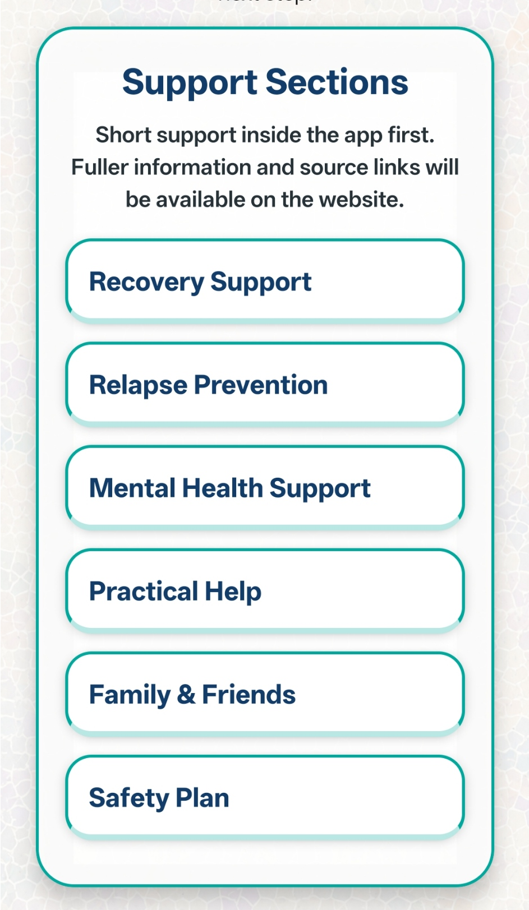
Get Through the Next 10 Minutes
This section is for the immediate moment. It does not try to solve everything at once.
It gives the user one small focus: get through the next few minutes safely.
The message encourages the user to pause, breathe, move away from the trigger if possible, and call someone safe.
The Open Support Steps button can then bring the user to more guidance when they are ready.
Back to home screen buttons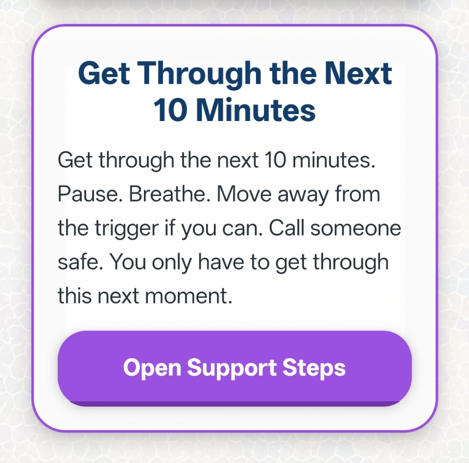
Read
Read gives you a simple written explanation inside the app.
It is there for people who prefer to take information in slowly and read it at their own pace.
Back to home screen buttons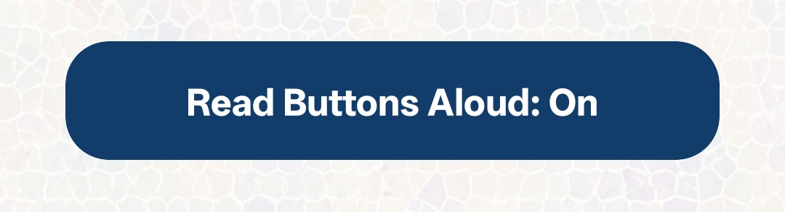
Home
Home brings you back to the main Mosaic screen.
From the Home screen, you can access the main support features of the app, including meetings, quiet moments, reflections, activities, and Hold the Line.
Back to home screen buttons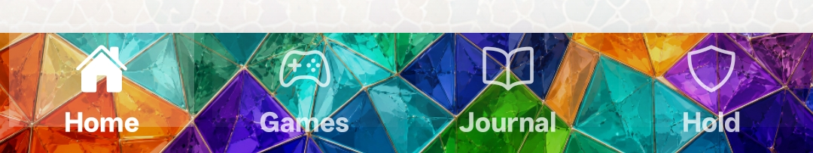
Games
Games gives you a place to take a break and redirect your attention.
The aim is not just entertainment. It is to give your mind something else to focus on for a while.
Back to home screen buttonsJournal
Journal gives you a private space to write down thoughts, feelings, or what is happening in your day.
It can help you notice patterns, reflect on progress, and get things out of your head without needing to share them with anyone.
Back to home screen buttons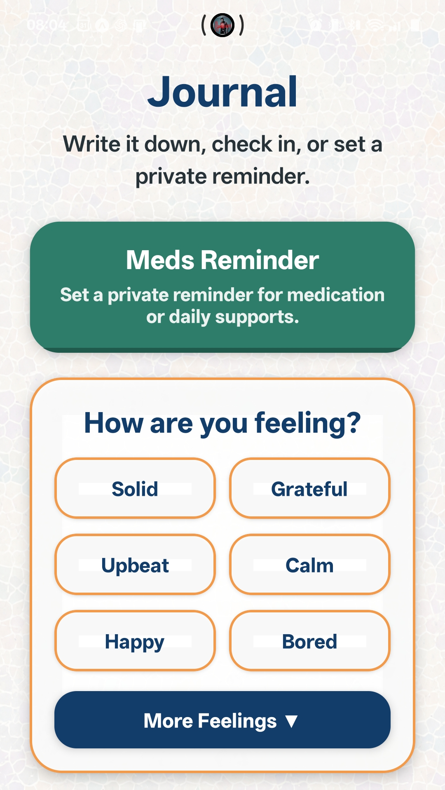
Reminders
Reminders can be used for medication, meetings, appointments, phone calls, or daily supports.
They are private and simple, and can be changed in Settings.
Settings
Settings will allow you to control things like sound, accessibility, reminders, saved details, and personal preferences.
If something looks wrong, Settings is the place to check it and change it.
Important
Mosaic does not replace counselling, meetings, sponsors, treatment services, emergency services, or real-world support.
It is designed to support recovery, not replace it.